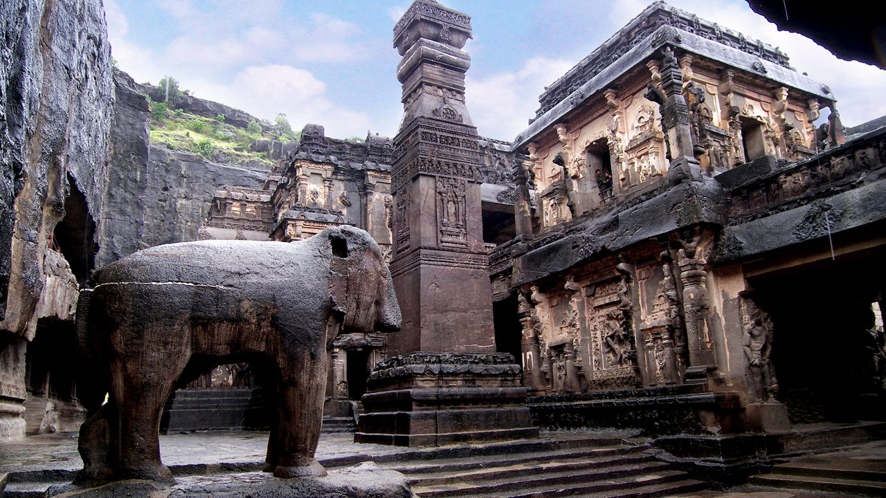
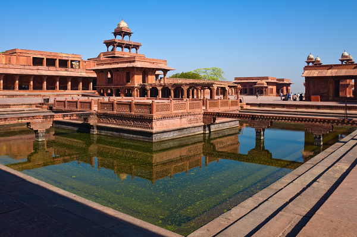
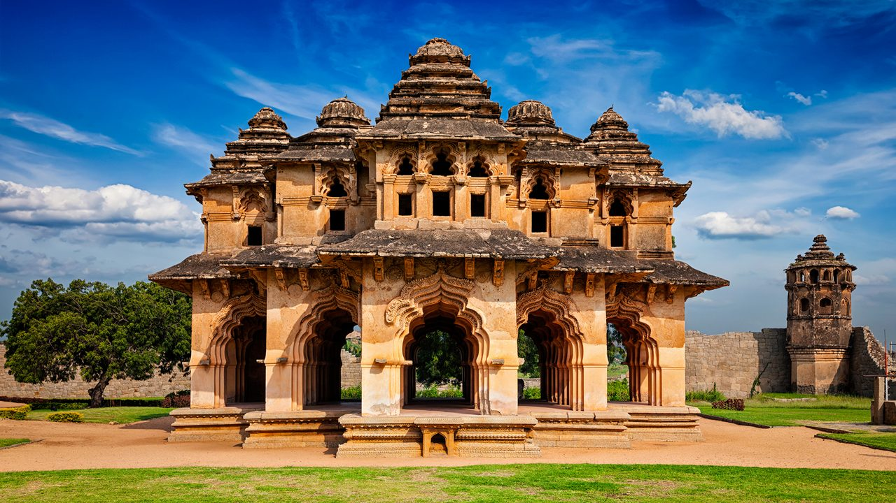

Qutub Minar, Delhi

The Qutub Minar is a UNESCO World Heritage Site, an iconic symbol of Indo-Islamic Afghan architecture, located in Delhi.
It stands 73 meters tall and is the tallest brick minaret in the world. It was built in 1193 by Qutb-ud-din Aibak, the first ruler of Delhi. The minaret is known for its intricate carvings and inscriptions in Arabic.
Red Fort, Delhi

The Red Fort in Delhi, another UNESCO World Heritage Site, represents the might of Mughal architecture with its red sandstone walls.
Built by Emperor Shah Jahan in the mid-17th century, the Red Fort served as the main residence of the Mughal emperors for around 200 years. The fort is a symbol of India's rich history and was the site of India's independence declaration in 1947.
Ajanta Caves, Maharashtra
Ajanta Caves are rock-cut Buddhist temples known for their stunning sculptures and paintings, dating back to the 2nd century BCE.
The caves contain detailed frescoes depicting the life of the Buddha and are famous for their historical and artistic value. The caves were abandoned for centuries and rediscovered in the 19th century.
Fatehpur Sikri, Uttar Pradesh
Fatehpur Sikri, built by the Mughal Emperor Akbar, is a city known for its historical significance and impressive architecture.
Fatehpur Sikri was the capital of the Mughal Empire for a brief period during Akbar's reign, before it was abandoned due to water supply issues. It is home to several impressive structures like Jama Masjid, Buland Darwaza, and Panch Mahal.
Hampi, Karnataka
Hampi, the ancient city of Vijayanagara, is a UNESCO World Heritage Site filled with fascinating temples and ruins from the 14th century.
The ruins of Hampi include ancient temples, palaces, and monuments. The Vijayanagara Empire flourished in this area, and today it is an archaeological site showcasing the grandeur of the ancient city.
Taj Mahal, Agra
.jpeg)
The Taj Mahal is one of the Seven Wonders of the World, a stunning example of Mughal architecture built by Emperor Shah Jahan in memory of his wife Mumtaz Mahal.
The Taj Mahal is renowned for its white marble structure, which is considered one of the finest examples of Mughal architecture. It has become an enduring symbol of love and is visited by millions of tourists every year.